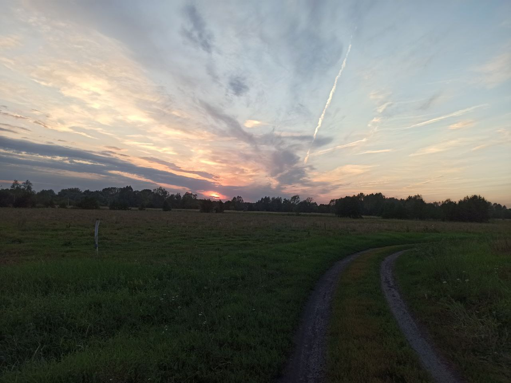

Природа Чувашии

Чувашия - красивый уголок Поволжья, республика в составе Российской Федерации, в которой гармонично сочетаются элементы старины и современности. Территория красивых озер и рек, степей и лесов с богатой природой, благоприятным климатом, разнообразным животным миром. Девственно чистая природа, большое количество лечебных санаториев и курортов - создают прекрасные условия для жизни и отдыха. В стране существуют и развиваются практически все виды туризма и активного отдыха. Туристов привлекает красота здешних мест, великолепная охота и рыбалка, прогулки по Волге, исторические памятники.
Растительность Чувашии отличается богатством и разнообразием. Ее характеризует чередование лесов и степной местности. Большое воздействие на природу края оказала хозяйственная деятельность человека. Леса, в недавнем прошлом почти полностью покрывающие территорию республики, постоянно подвергались вырубке. В настоящее время площадь покрытая лесами составляет чуть больше 30% от всей территории республики. Сосновые и еловые леса располагаются небольшими группами в южных областях республики и в Заволжье. В прошлом хвойные породы деревьев использовались в кораблестроении. Дубовые рощи можно встретить на правом берегу Волги.
В смешанных лесах встречаются дубы, березы, липы и кедр, из кустарников - шиповник, калина. В лесах много ягод, наиболее часто встречаются брусника, черника, кислица. В лесах Чувашии много съедобных грибов, сбором которых занимаются заготовительные организации.В юго-восточной части республики преобладает степная растительность. Она представлена большим количеством трав, наиболее распространены ковыль, шалфей, мятлик и типчак. Луговая растительность способствовала формированию черноземных почв, которые в дальнейшем распахивались для выращивания сельскохозяйственных культур. А дикорастущие растения были уничтожены.
На берегах озер и рек произрастает болотная и водная растительность. В процентном отношении она занимает незначительную территорию республики, наиболее часто встречается камыш, рогоз, хвощ, стрелолист, лисохвост, осока. Из водных растений можно выделить кувшинку белую и кубышку желтую. Здесь можно встретить исчезающее редкое растение - водяной орех, он занесен в Красную Книгу.
Смешение природных особенностей южной тайги и степей оказало большое влияние на формирование животного мира республики. Некоторые виды животных появились в республике путем искусственного расселения. А другие, наоборот, были уничтожены, в результате промышленной деятельности человека.
В лиственных лесах можно встретить большое видовое разнообразие птиц, рептилий, амфибий и диких животных. Здесь есть все условия для их комфортного проживания и размножения - стабильный корм и надежные укрытия. За последние годы постепенно увеличивается поголовье лосей и кабанов, этому способствует наложения запрета на их отстрел. В смешанных лесах обитают куницы, белки, лисы, зайцы, енотовидные собаки и горностаи.
| Река | Длина | Бассейн |
|---|---|---|
| Сура | 841 км | 67 500 км² |
| Малый Цивиль | 129 км | 1450 км² |
| Волга | 3530 км | 1 360 000 км² |
| Алатырь | 296 км | 11 200 км² |
| Большой Цивиль | 172 км | 4690 км² |